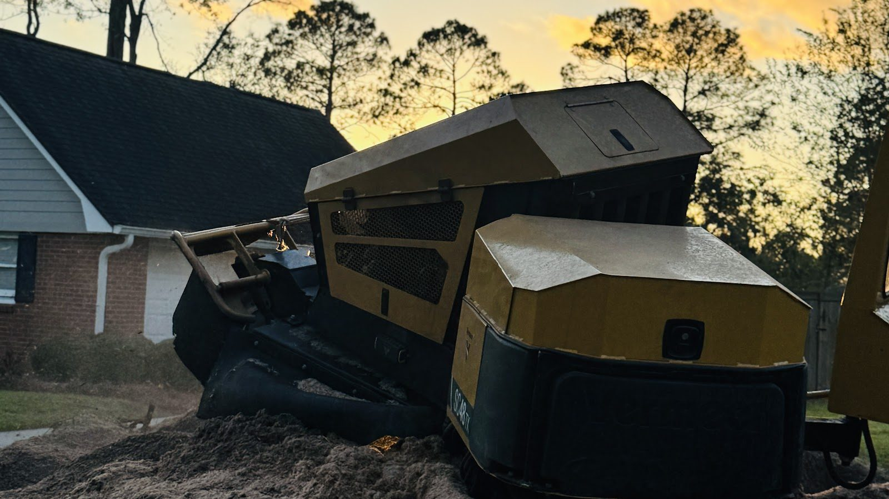
Tree service · Spring, TX
Trees down. Yards back.
Spring, Houston and the north Houston area
Tree removal, trimming, stump grinding, storm cleanup, brush clearing and landscaping for yards under the pines north of Houston.
4.6 on GoogleStump grinder on a mound of wood chips at sunset
The stones · six services
From the first cut to the last chip.
Six jobs, stacked up on either bank. Every one starts the same way: a look at the tree, and a call or a text about what you want done with it.
-
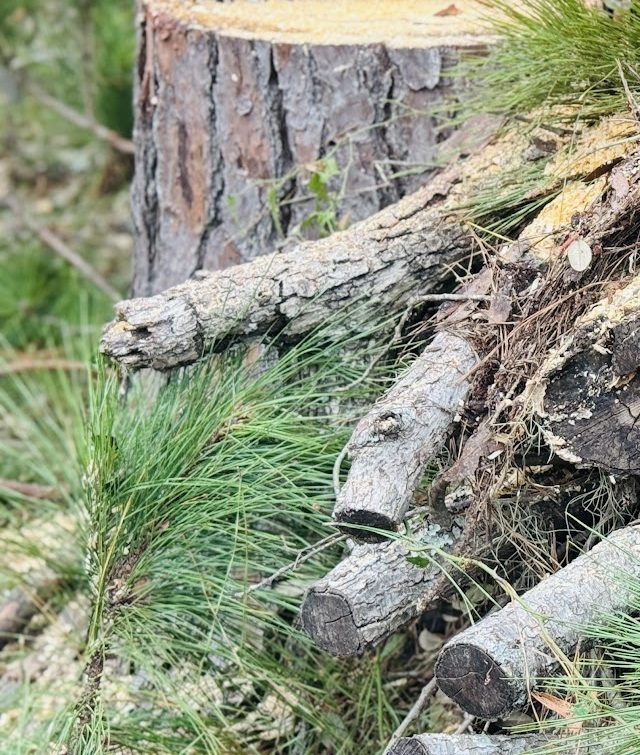
Tree removal
Dead, leaning or unwanted trees taken down and cut into pieces you can see the end of.
-
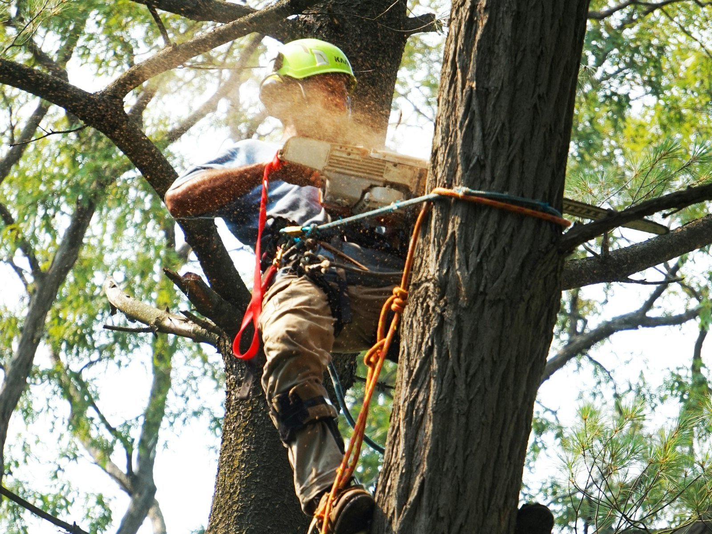
Tree trimming
Pines and live oaks thinned, lifted and cut back from roofs, drives and walks.
-
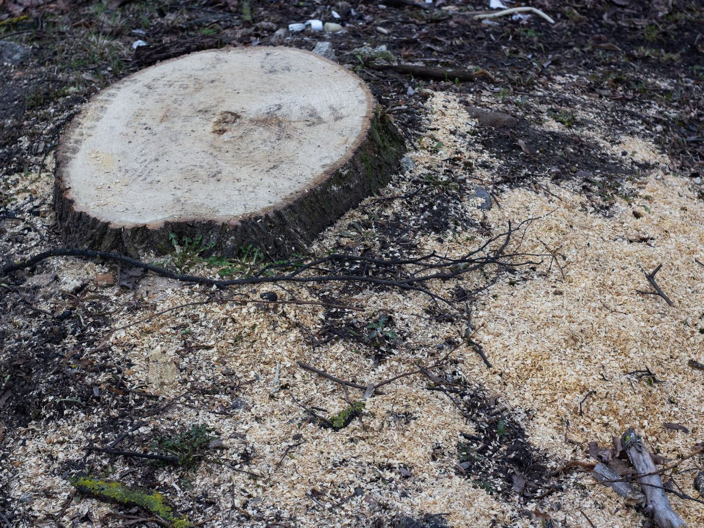
Stump grinding
Stumps ground down into wood chips so the spot can go back to lawn or beds.
-
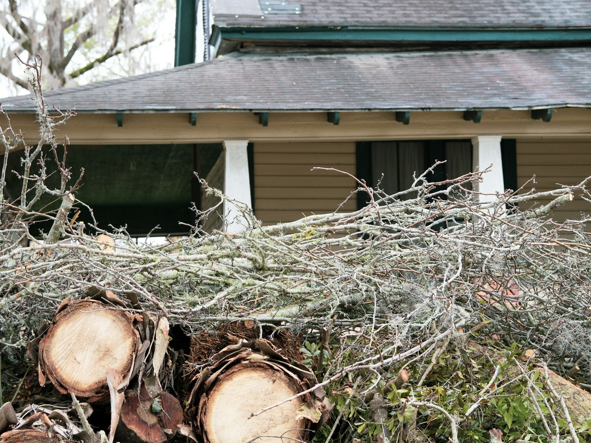
Storm debris and hurricane cleanup
Fallen trunks, snapped limbs and storm debris cut up and cleared off the yard.
-
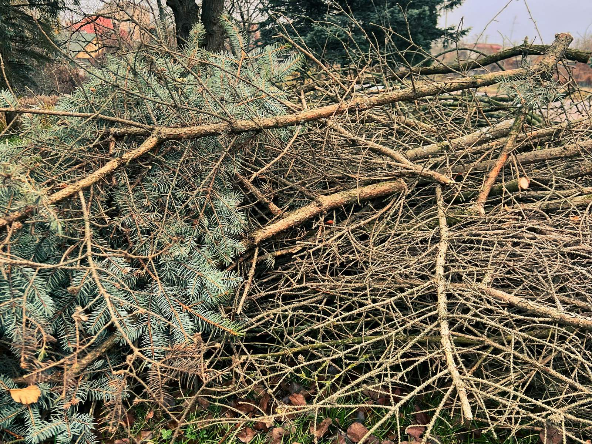
Shrub and brush clearing
Overgrown shrubs pulled out and brush cleared from beds, lot lines and wooded edges.
-
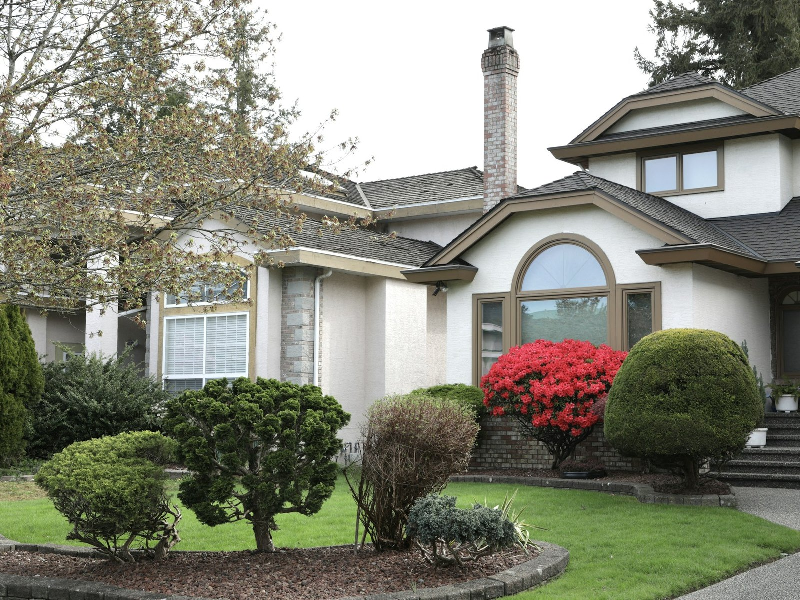
Landscaping
Beds, edges and a tidier yard once the trees and stumps are sorted out.
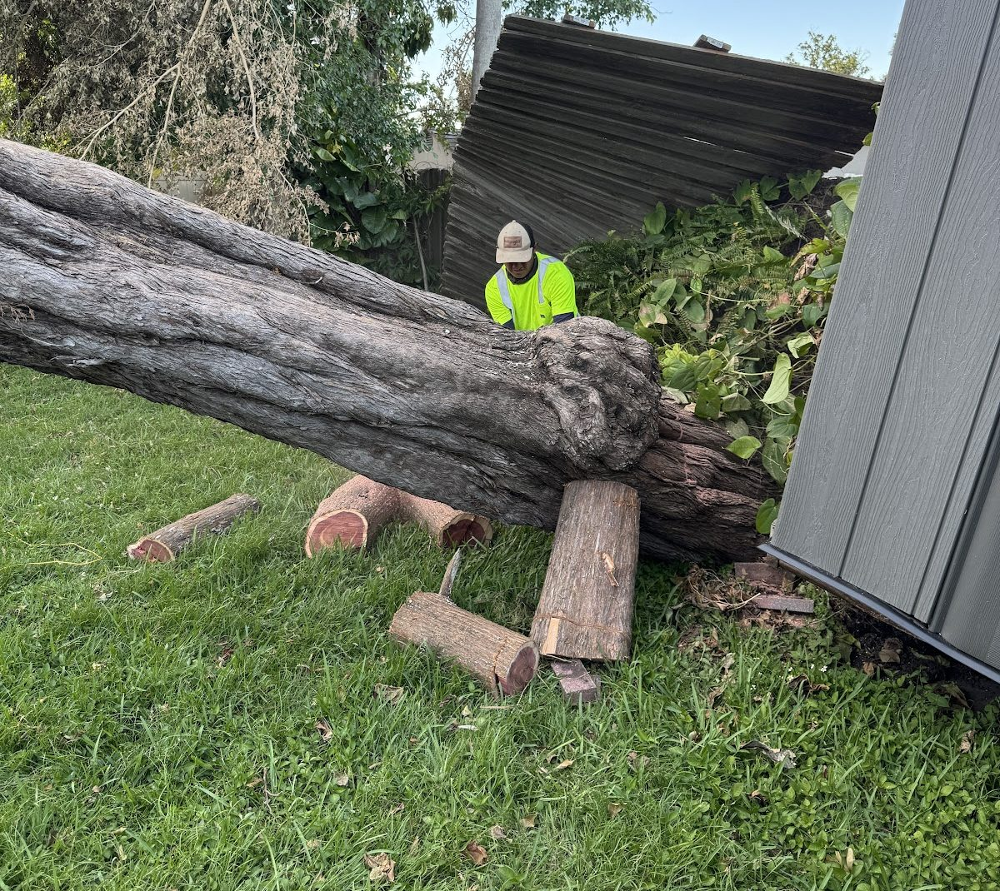
After the storm
When a storm drops a tree.
Gulf storms and hurricanes bring down limbs and whole trunks across Spring and north Houston. Before anyone starts cutting:
Stay well away from downed or sagging power lines. Call 911 or your power company about them.
Don't climb or cut hung-up limbs yourself. A limb caught in a tree can move without warning.
Take photos from a safe spot: the tree, the damage and what it is lying on.
Call or text (832) 371-8888 and send the photos for a look.
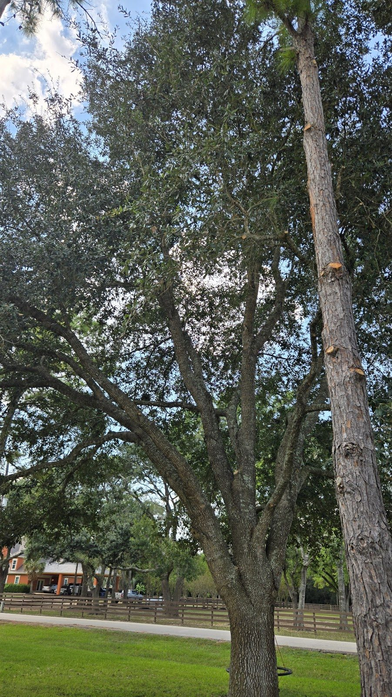
Tree trimming
Pruned, not butchered.
Live oaks and tall pines shade most yards from Spring to Magnolia. Good trimming is judged by what is left on the tree.
Canopy clearance
Low limbs lifted off the roof, the drive and the walk, so there is room to live under the tree.
Deadwood out
Dead and broken branches taken out of oaks and pines before the next storm takes them down.
Branches over roofs
Limbs that rub shingles or hang over the house cut back to clean cuts.
Live oaks: a balanced canopy matters more than a heavy cut. Ask about timing when you call or text.
Text a photo of the treeShrub and brush clearing
On the ground.
Overgrown shrubs pulled out with a track loader and grapple, and the brush cleared away with them.
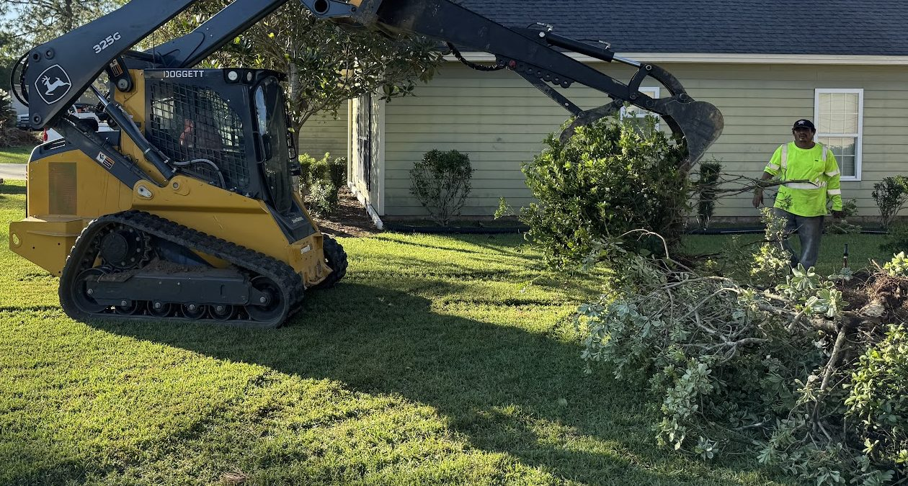
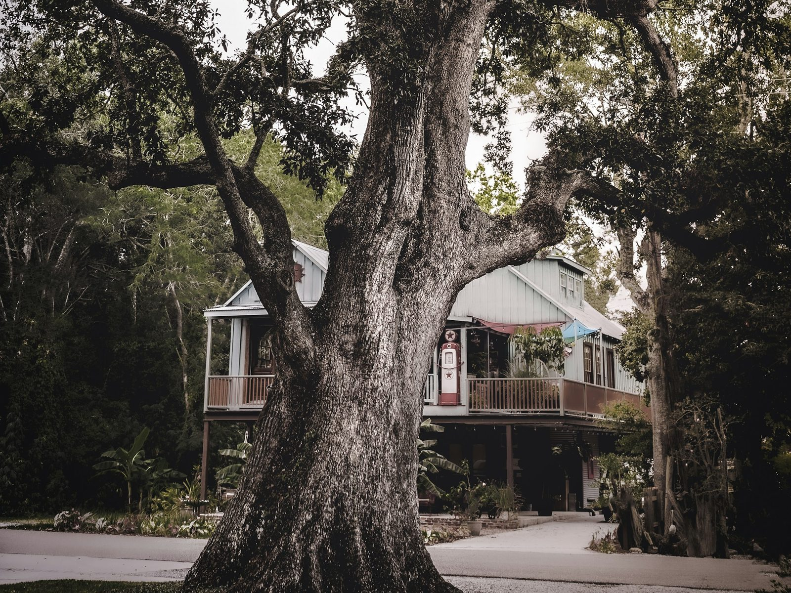
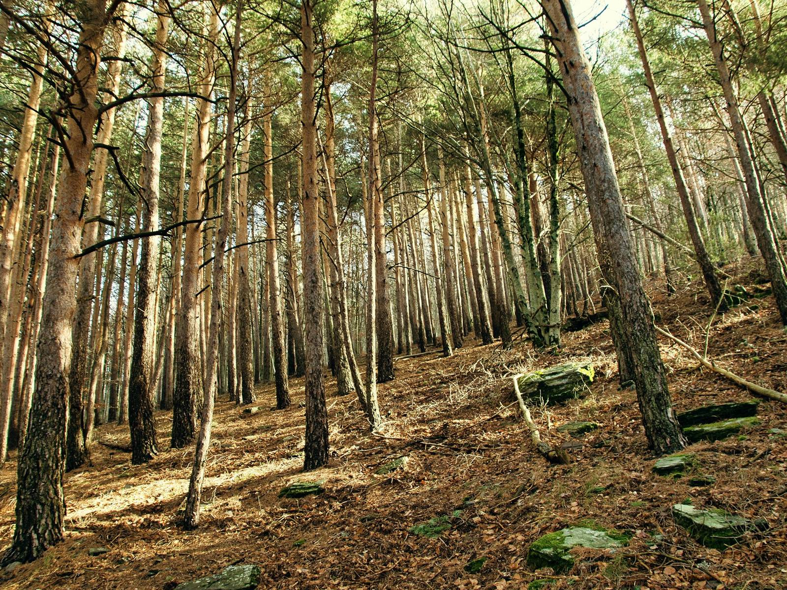
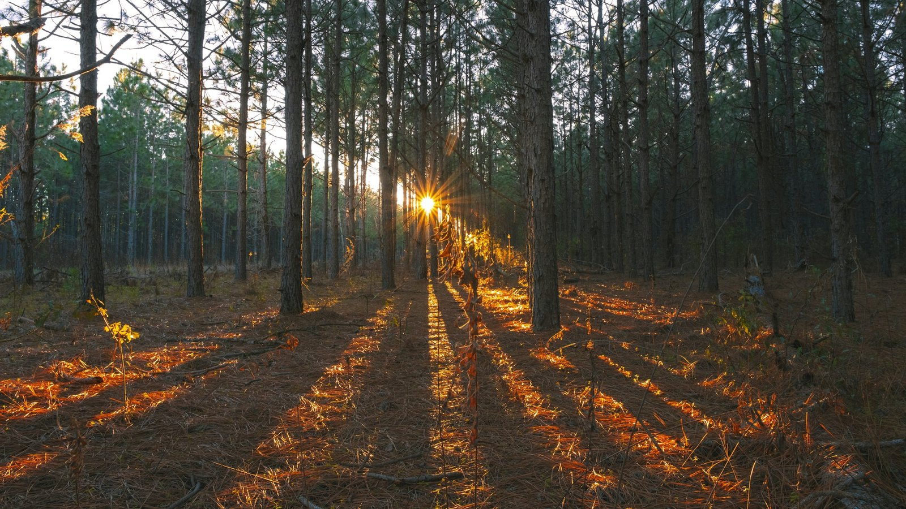
Pine country · service area
North of Houston, under the pines.
Based in Spring, TX 77388 and working Spring, Houston and the north Houston area, down the river of towns on the right.
- Cypress
- Magnolia
- Spring
- Kingwood
- Conroe
- Galveston
- Houston
- The Woodlands
- Katy
4.6 on Google
Call, text or send a photo.
A photo of the tree and the town it is in is the easiest way to start.
- Call(832) 371-8888
- Text(832) 371-8888
- Emailriverstonelandworks@gmail.com
- FacebookRiverstone Landworks
- AreaSpring, TX 77388 and the north Houston area
- Hours, as listed on GoogleOpen 24 hours, 7 days
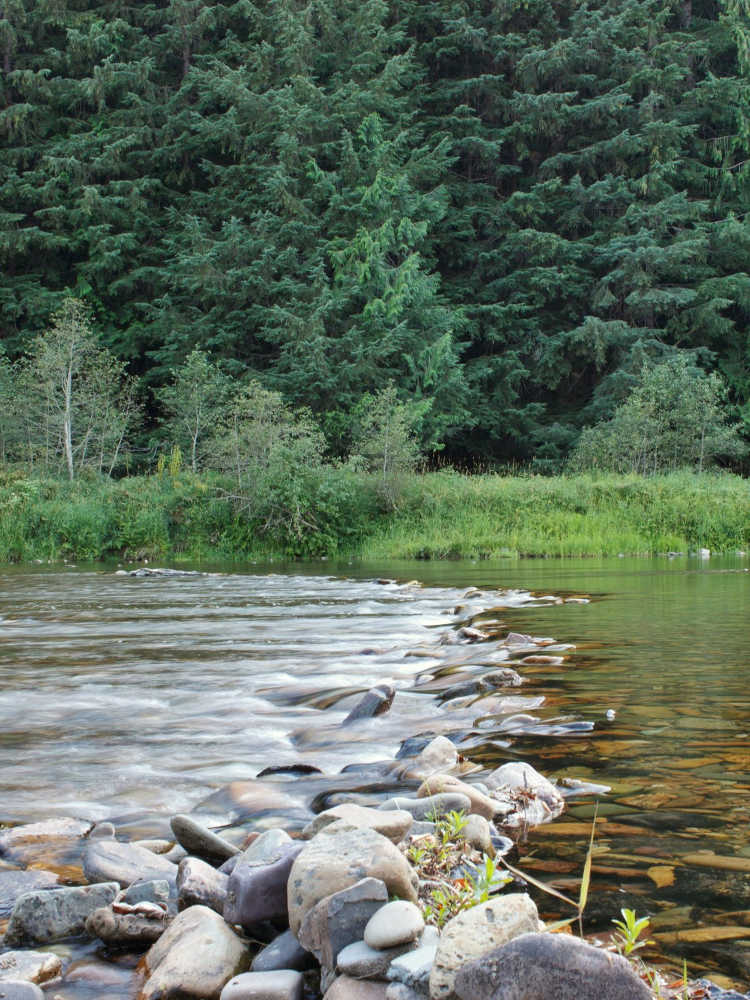
Questions
Turned over, one by one.
Can you take down a tree that is close to the house?
Tree removal is one of the six services, and a tree near a roof, a shed or the drive is exactly when the plan matters most. Send a photo that shows the tree and the house in the same frame, and say roughly how close it stands, so the job can be talked through before anything is cut.
What happens when a stump is ground?
A stump grinder chews the stump down into a mound of wood chips, like the one under the machine at the top of this page. Say what you want for the spot afterwards, whether that is lawn, a bed or some landscaping, and ask what happens to the chips.
Do you clean up after a storm or a hurricane?
Yes. Storm debris and hurricane cleanup covers fallen trunks, snapped limbs and brush spread across the yard. If any power line is down or sagging, stay well away and call 911 or the power company first. Then call or text (832) 371-8888 with photos taken from a safe spot.
How do you trim live oaks?
Oak trimming here means taking out deadwood, lifting limbs off roofs and drives, and keeping the canopy balanced instead of cutting it hard. Timing can matter with oaks, so ask about it when you call or text.
What should I send in a text?
A photo of the tree, taken from far enough back to show the whole tree and what is around it, plus your neighborhood or city and what you would like done. Text it to (832) 371-8888.